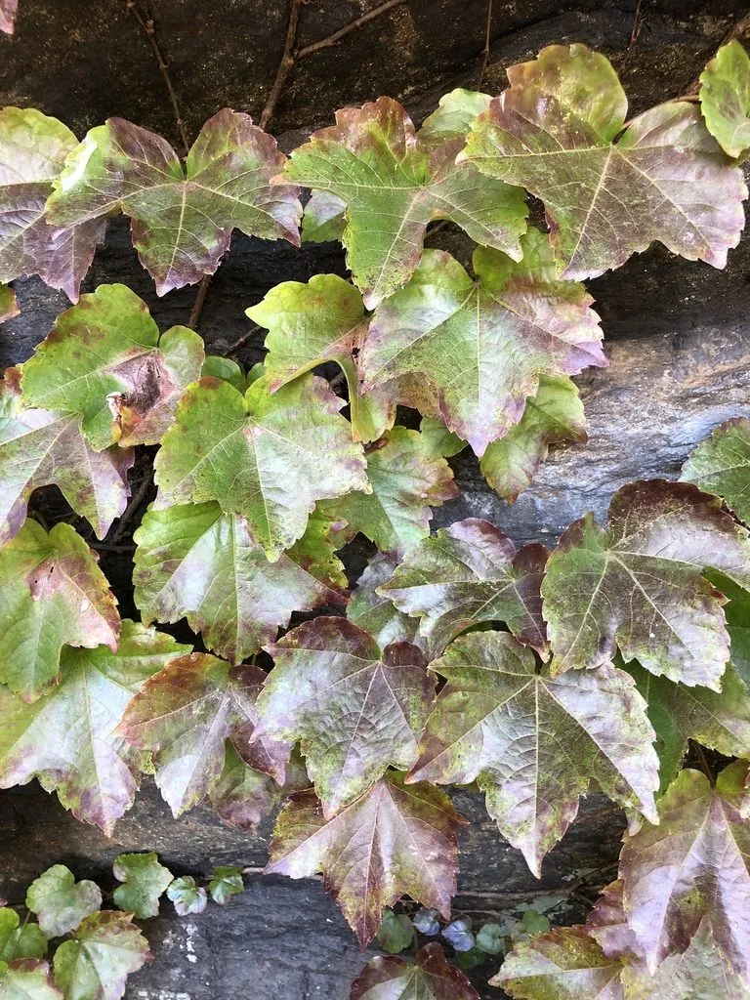

灌木与花木 · 植物界
爬山虎 Parthenocissus tricuspidata

靠吸盘状卷须攀附墙面生长的落叶藤本，秋季叶片转为鲜红色，是城市垂直绿化与墙体降温的重要植物。
- 分类
- 门被子植物门纲木兰纲目葡萄目科葡萄科属地锦属
- 栖息环境
- 海拔 1500 米以下的山坡岩壁、树干与建筑墙面，喜光耐寒耐旱
- 地理分布
- 原产中国、朝鲜半岛及日本，中国南北各地常见
- 保护级别
- 暂无评估；中国未列入国家重点保护野生植物名录
物种志
爬山虎为落叶木质藤本，茎长达 20 m 以上，卷须短而多分枝，顶端具圆形吸盘，能吸附在墙面、岩石与树干上。叶片宽卵形，常 3 裂，边缘具粗齿，叶柄长；花期 6–7 月，花小、黄绿色，聚伞花序生于短枝；浆果球形，成熟时紫黑色，被白粉，内含 1–2 粒种子。
爬山虎原产中国、朝鲜半岛及日本，中国南北各地常见，攀附于墙面、崖壁与树干上生长，喜光、耐寒、耐旱，对土壤要求不严。秋季叶片变为鲜红或橙红，是优良的垂直绿化与秋色叶藤本；密集的叶幕能遮挡阳光、降低墙面温度，被称为“绿色空调”。根茎可入药，有祛风除湿之效；由于吸盘固着牢固，爬山虎常被用于旧墙与护坡绿化。
形态与习性
- 藤长可达 20 m 以上
- 花期6–7 月，花小、黄绿色
- 果期9–10 月，浆果紫黑色
- 光照喜光，也耐半阴
- 水分耐旱，怕积水
- 土壤适应性强，各类土壤均可生长
- 主要用途垂直绿化、护坡、秋季叶色观赏
趣味知识
- 爬山虎的卷须顶端长着圆形吸盘，能像吸盘一样牢牢吸附在墙面。
- 爬山虎秋季叶片转为鲜红色，是城市里常见的秋色叶藤本。
- 爬山虎叶幕能遮挡阳光、降低墙面温度，被称为天然的“绿色空调”。
- 爬山虎的吸盘固着牢固，即使垂直墙面也能向上攀爬 20 m 以上。